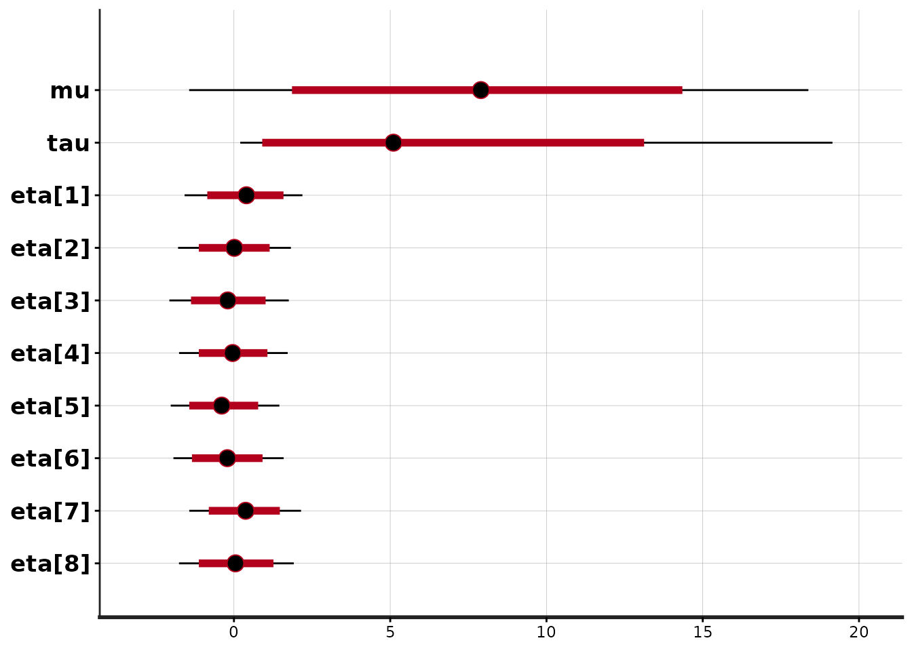
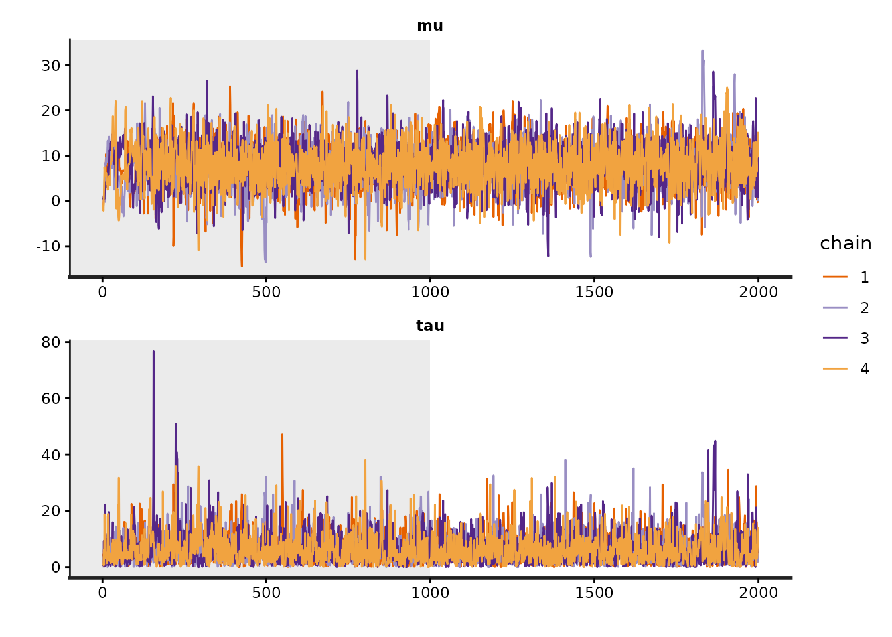
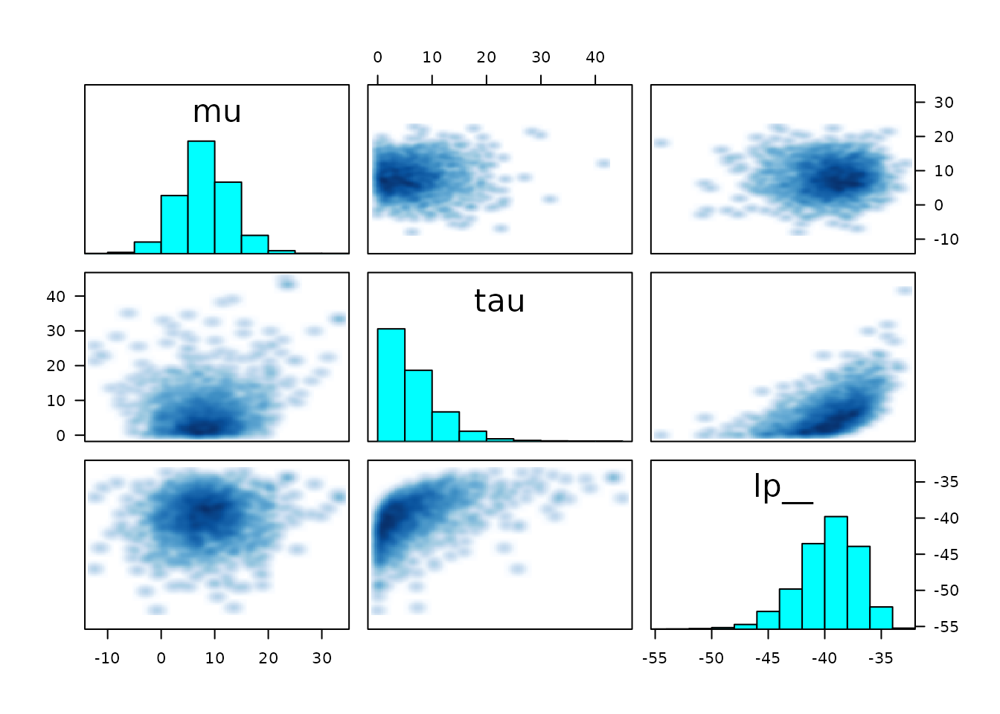

RStan: the R interface to Stan
Stan Development Team
2026-01-14
Source:vignettes/rstan.Rmd
rstan.RmdIn this vignette we present RStan, the R interface to Stan. Stan is a C++ library for Bayesian inference using the No-U-Turn sampler (a variant of Hamiltonian Monte Carlo) or frequentist inference via optimization. We illustrate the features of RStan through an example in Gelman et al. (2003).
Introduction
Stan is a C++ library for Bayesian modeling and inference that primarily uses the No-U-Turn sampler (NUTS) (Hoffman and Gelman 2012) to obtain posterior simulations given a user-specified model and data. Alternatively, Stan can utilize the LBFGS optimization algorithm to maximize an objective function, such as a log-likelihood. The R package rstan provides RStan, the R interface to Stan. The rstan package allows one to conveniently fit Stan models from R (R Core Team 2014) and access the output, including posterior inferences and intermediate quantities such as evaluations of the log posterior density and its gradients.
In this vignette we provide a concise introduction to the functionality included in the rstan package. Stan’s website mc-stan.org has additional details and provides up-to-date information about how to operate both Stan and its many interfaces including RStan. See, for example, RStan Getting Started (The Stan Development Team 2014).
Prerequisites
Stan has a modeling language, which is similar to but not identical to that of the Bayesian graphical modeling package BUGS (Lunn et al. 2000). A parser translates a model expressed in the Stan language to C++ code, whereupon it is compiled to an executable program and loaded as a Dynamic Shared Object (DSO) in R which can then be called by the user.
A C++ compiler, such as g++ or clang++, is required for
this process. For instructions on installing a C++ compiler for use with
RStan see RStan-Getting-Started.
The rstan package also depends heavily on several other R packages:
- StanHeaders (Stan C++ headers)
- BH (Boost C++ headers)
- RcppEigen (Eigen C++ headers)
- Rcpp (facilitates using C++ from R)
- inline (compiles C++ for use with R)
These dependencies should be automatically installed if you install the rstan package via one of the conventional mechanisms.
Typical Workflow
The following is a typical workflow for using Stan via RStan for Bayesian inference.
- Represent a statistical model by writing its log posterior density
(up to an normalizing constant that does not depend on the unknown
parameters in the model) using the Stan modeling language. We recommend
using a separate file with a
.stanextension, although it can also be done using a character string within R. - Translate the Stan program to C++ code using the
stancfunction. - Compile the C++ code to create a DSO (also called a dynamic link library (DLL)) that can be loaded by R.
- Run the DSO to sample from the posterior distribution.
- Diagnose non-convergence of the MCMC chains.
- Conduct inference based on the posterior sample (the MCMC draws from the posterior distribution).
Conveniently, steps 2, 3, and 4, above, are all performed implicitly
by a single call to the stan function.
Example
Throughout the rest of the vignette we’ll use a hierarchical meta-analysis model described in section 5.5 of Gelman et al. (2003) as a running example. A hierarchical model is used to model the effect of coaching programs on college admissions tests. The data, shown in the table below, summarize the results of experiments conducted in eight high schools, with an estimated standard error for each. These data and model are of historical interest as an example of full Bayesian inference (Rubin 1981). For short, we call this the Eight Schools examples.
| School | Estimate (\(y_j\)) | Standard Error (\(\sigma_j\)) |
|---|---|---|
| A | 28 | 15 |
| B | 8 | 10 |
| C | -3 | 16 |
| D | 7 | 11 |
| E | -1 | 9 |
| F | 1 | 11 |
| G | 18 | 10 |
| H | 12 | 18 |
We use the Eight Schools example here because it is simple but also represents a nontrivial Markov chain simulation problem in that there is dependence between the parameters of original interest in the study — the effects of coaching in each of the eight schools — and the hyperparameter representing the variation of these effects in the modeled population. Certain implementations of a Gibbs sampler or a Hamiltonian Monte Carlo sampler can be slow to converge in this example.
The statistical model of interest is specified as
\[ \begin{aligned} y_j &\sim \mathsf{Normal}(\theta_j, \sigma_j), \quad j=1,\ldots,8 \\ \theta_j &\sim \mathsf{Normal}(\mu, \tau), \quad j=1,\ldots,8 \\ p(\mu, \tau) &\propto 1, \end{aligned} \]
where each \(\sigma_j\) is assumed known.
Write a Stan Program
RStan allows a Stan program to be coded in a text file (typically
with suffix .stan) or in a R character vector (of length
one). We put the following code for the Eight Schools model into the
file schools.stan:
data {
int<lower=0> J; // number of schools
array[J] real y; // estimated treatment effects
array[J] real<lower=0> sigma; // s.e. of effect estimates
}
parameters {
real mu;
real<lower=0> tau;
vector[J] eta;
}
transformed parameters {
vector[J] theta;
theta = mu + tau * eta;
}
model {
target += normal_lpdf(eta | 0, 1);
target += normal_lpdf(y | theta, sigma);
}The first section of the Stan program above, the data
block, specifies the data that is conditioned upon in Bayes Rule: the
number of schools, \(J\), the vector of
estimates, \((y_1, \ldots, y_J)\), and
the vector of standard errors of the estimates \((\sigma_{1}, \ldots, \sigma_{J})\). Data
are declared as integer or real and can be vectors (or, more generally,
arrays) if dimensions are specified. Data can also be constrained; for
example, in the above model \(J\) has
been restricted to be at least \(1\)
and the components of \(\sigma_y\) must
all be positive.
The parameters block declares the parameters whose
posterior distribution is sought. These are the the mean, \(\mu\), and standard deviation, \(\tau\), of the school effects, plus the
standardized school-level effects \(\eta\). In this model, we let the
unstandardized school-level effects, \(\theta\), be a transformed parameter
constructed by scaling the standardized effects by \(\tau\) and shifting them by \(\mu\) rather than directly declaring \(\theta\) as a parameter. By parameterizing
the model this way, the sampler runs more efficiently because the
resulting multivariate geometry is more amendable to Hamiltonian Monte
Carlo (Neal 2011).
Finally, the model block looks similar to standard
statistical notation. (Just be careful: the second argument to Stan’s
normal\((\cdot,\cdot)\) distribution is
the standard deviation, not the variance as is usual in statistical
notation). We have written the model in vector notation, which allows
Stan to make use of more efficient algorithmic differentiation (AD). It
would also be possible — but less efficient — to write the model by
replacing normal_lpdf(y | theta,sigma) with a loop over the
\(J\) schools,
for (j in 1:J)
target += normal_lpdf(y[j] | theta[j],sigma[j]);Stan has versions of many of the most useful R functions for
statistical modeling, including probability distributions, matrix
operations, and various special functions. However, the names of the
Stan functions may differ from their R counterparts and, more subtly,
the parameterizations of probability distributions in Stan may differ
from those in R for the same distribution. To mitigate this problem, the
lookup function can be passed an R function or character
string naming an R function, and RStan will attempt to look up the
corresponding Stan function, display its arguments, and give the page
number in The Stan Development Team (2016)
where the function is discussed.
lookup("dnorm") StanFunction
415 normal_id_glm_lpdf
418 normal_log
419 normal_lpdf
553 std_normal_lpdf
Arguments
415 (real, matrix, real, vector, T);(vector, row_vector, vector, vector, vector)
418 (real, real, T);(vector, vector, vector)
419 (real, real, T);(vector, vector, vector)
553 (T);(vector)
ReturnType
415 T;real
418 T;real
419 T;real
553 T;real
lookup(dwilcox) # no corresponding Stan function[1] "no matching Stan functions"If the lookup function fails to find an R function that
corresponds to a Stan function, it will treat its argument as a regular
expression and attempt to find matches with the names of Stan
functions.
Preparing the Data
The stan function accepts data as a named list, a
character vector of object names, or an environment.
Alternatively, the data argument can be omitted and R will
search for objects that have the same names as those declared in the
data block of the Stan program. Here is the data for the
Eight Schools example:
schools_data <- list(
J = 8,
y = c(28, 8, -3, 7, -1, 1, 18, 12),
sigma = c(15, 10, 16, 11, 9, 11, 10, 18)
)It would also be possible (indeed, encouraged) to read in the data from a file rather than to directly enter the numbers in the R script.
Sample from the Posterior Distribution
Next, we can call the stan function to draw posterior
samples:
library(rstan)
fit1 <- stan(
file = "schools.stan", # Stan program
data = schools_data, # named list of data
chains = 4, # number of Markov chains
warmup = 1000, # number of warmup iterations per chain
iter = 2000, # total number of iterations per chain
cores = 1, # number of cores (could use one per chain)
refresh = 0 # no progress shown
)Trying to compile a simple C fileThe stan function wraps the following three steps:
- Translate a model in Stan code to C++ code
- Compile the C++ code to a dynamic shared object (DSO) and load the DSO
- Sample given some user-specified data and other settings
A single call to stan performs all three steps, but they
can also be executed one by one (see the help pages for
stanc, stan_model, and sampling),
which can be useful for debugging. In addition, Stan saves the DSO so
that when the same model is fit again (possibly with new data and
settings) we can avoid recompilation. If an error happens after the
model is compiled but before sampling (e.g., problems with inputs like
data and initial values), we can still reuse the compiled model.
The stan function returns a stanfit object, which is an
S4 object of class "stanfit". For those who are not
familiar with the concept of class and S4 class in R, refer to Chambers (2008). An S4 class consists of some
attributes (data) to model an object and some methods to model the
behavior of the object. From a user’s perspective, once a stanfit object
is created, we are mainly concerned about what methods are defined.
If no error occurs, the returned stanfit object includes the sample
drawn from the posterior distribution for the model parameters and other
quantities defined in the model. If there is an error (e.g. a syntax
error in the Stan program), stan will either quit or return
a stanfit object that contains no posterior draws.
For class "stanfit", many methods such as
print and plot are defined for working with
the MCMC sample. For example, the following shows a summary of the
parameters from the Eight Schools model using the print
method:
Inference for Stan model: anon_model.
4 chains, each with iter=2000; warmup=1000; thin=1;
post-warmup draws per chain=1000, total post-warmup draws=4000.
mean se_mean sd 10% 50% 90% n_eff Rhat
theta[1] 11.32 0.16 8.28 2.22 10.28 21.91 2850 1
theta[2] 8.00 0.10 6.24 0.46 7.90 15.77 4201 1
theta[3] 6.30 0.12 7.54 -3.21 6.76 14.88 4257 1
theta[4] 7.77 0.09 6.38 -0.12 7.67 15.74 5581 1
theta[5] 5.25 0.09 6.33 -2.87 5.76 13.02 4798 1
theta[6] 6.34 0.10 6.82 -2.14 6.81 14.29 5032 1
theta[7] 10.61 0.11 6.85 2.41 10.10 19.30 3653 1
theta[8] 8.42 0.12 7.75 -0.67 8.29 17.61 3978 1
mu 8.10 0.11 5.06 1.85 7.90 14.36 2265 1
tau 6.29 0.15 5.37 0.91 5.09 13.12 1372 1
lp__ -39.67 0.07 2.68 -43.19 -39.43 -36.53 1352 1
Samples were drawn using NUTS(diag_e) at Wed Jan 14 17:19:53 2026.
For each parameter, n_eff is a crude measure of effective sample size,
and Rhat is the potential scale reduction factor on split chains (at
convergence, Rhat=1).The last line of this output, lp__, is the logarithm of
the (unnormalized) posterior density as calculated by Stan. This log
density can be used in various ways for model evaluation and comparison
(see, e.g., Vehtari and Ojanen
(2012)).
Arguments to the stan Function
The primary arguments for sampling (in functions stan
and sampling) include data, initial values, and the options
of the sampler such as chains, iter, and
warmup. In particular, warmup specifies the
number of iterations that are used by the NUTS sampler for the
adaptation phase before sampling begins. After the warmup, the sampler
turns off adaptation and continues until a total of iter
iterations (including warmup) have been completed. There is
no theoretical guarantee that the draws obtained during warmup are from
the posterior distribution, so the warmup draws should only be used for
diagnosis and not inference. The summaries for the parameters shown by
the print method are calculated using only post-warmup
draws.
The optional init argument can be used to specify
initial values for the Markov chains. There are several ways to specify
initial values, and the details can be found in the documentation of the
stan function. The vast majority of the time it is adequate
to allow Stan to generate its own initial values randomly. However,
sometimes it is better to specify the initial values for at least a
subset of the objects declared in the parameters block of a
Stan program.
Stan uses a random number generator (RNG) that supports parallelism.
The initialization of the RNG is determined by the arguments
seed and chain_id. Even if we are running
multiple chains from one call to the stan function we only
need to specify one seed, which is randomly generated by R if not
specified.
Data Preprocessing and Passing
The data passed to stan will go through a preprocessing
procedure. The details of this preprocessing are documented in the
documentation for the stan function. Here we stress a few
important steps. First, RStan allows the user to pass more objects as
data than what is declared in the data block (silently
omitting any unnecessary objects). In general, an element in the list of
data passed to Stan from R should be numeric and its dimension should
match the declaration in the data block of the model. So
for example, the factor type in R is not supported as a
data element for RStan and must be converted to integer codes via
as.integer. The Stan modeling language distinguishes
between integers and doubles (type int and
real in Stan modeling language, respectively). The
stan function will convert some R data (which is
double-precision usually) to integers if possible.
The Stan language has scalars and other types that are sets of
scalars, e.g. vectors, matrices, and arrays. As R does not have true
scalars, RStan treats vectors of length one as scalars. However,
consider a model with a data block defined as
data {
int<lower=1> N;
array[N] real y;
} in which N can be \(1\)
as a special case. So if we know that N is always larger
than \(1\), we can use a vector of
length N in R as the data input for y (for
example, a vector created by y <- rnorm(N)). If we want
to prevent RStan from treating the input data for y as a
scalar when \(N`\) is \(1\), we need to explicitly make it an array
as the following R code shows:
y <- as.array(y)Stan cannot handle missing values in data automatically, so no
element of the data can contain NA values. An important
step in RStan’s data preprocessing is to check missing values and issue
an error if any are found. There are, however, various ways of writing
Stan programs that account for missing data (see The Stan Development Team (2016)).
Methods for the "stanfit" Class
The other vignette included with the rstan package
discusses stanfit objects in greater detail and gives examples of
accessing the most important content contained in the objects (e.g.,
posterior draws, diagnostic summaries). Also, a full list of available
methods can be found in the documentation for the "stanfit"
class at help("stanfit", "rstan"). Here we give only a few
examples.
The plot method for stanfit objects provides various
graphical overviews of the output. The default plot shows posterior
uncertainty intervals (by default 80% (inner) and 95% (outer)) and the
posterior median for all the parameters as well as lp__
(the log of posterior density function up to an additive constant):
plot(fit1)'pars' not specified. Showing first 10 parameters by default.ci_level: 0.8 (80% intervals)outer_level: 0.95 (95% intervals)
The optional plotfun argument can be used to select
among the various available plots. See
help("plot,stanfit-method").
The traceplot method is used to plot the time series of
the posterior draws. If we include the warmup draws by setting
inc_warmup=TRUE, the background color of the warmup area is
different from the post-warmup phase:

To assess the convergence of the Markov chains, in addition to
visually inspecting traceplots we can calculate the split \(\hat{R}\) statistic. Split \(\hat{R}\) is an updated version of the
\(\hat{R}\) statistic proposed in Gelman and Rubin (1992) that is based on
splitting each chain into two halves. See the Stan manual for more
details. The estimated \(\hat{R}\) for
each parameter is included as one of the columns in the output from the
summary and print methods.
Inference for Stan model: anon_model.
4 chains, each with iter=2000; warmup=1000; thin=1;
post-warmup draws per chain=1000, total post-warmup draws=4000.
mean se_mean sd 2.5% 25% 50% 75% 97.5% n_eff Rhat
mu 8.10 0.11 5.06 -1.43 4.92 7.90 11.30 18.38 2265 1
tau 6.29 0.15 5.37 0.20 2.36 5.09 8.85 19.14 1372 1
Samples were drawn using NUTS(diag_e) at Wed Jan 14 17:19:53 2026.
For each parameter, n_eff is a crude measure of effective sample size,
and Rhat is the potential scale reduction factor on split chains (at
convergence, Rhat=1).Again, see the additional vignette on stanfit objects for more details.
Sampling Difficulties
The best way to visualize the output of a model is through the ShinyStan interface, which can be accessed via the shinystan R package. ShinyStan facilitates both the visualization of parameter distributions and diagnosing problems with the sampler. The documentation for the shinystan package provides instructions for using the interface with stanfit objects.
In addition to using ShinyStan, it is also possible to diagnose some
sampling problems using functions in the rstan package.
The get_sampler_params function returns information on
parameters related the performance of the sampler:
# all chains combined
sampler_params <- get_sampler_params(fit1, inc_warmup = TRUE)
summary(do.call(rbind, sampler_params), digits = 2) accept_stat__ stepsize__ treedepth__ n_leapfrog__ divergent__
Min. :0.00 Min. :0.032 Min. :0.0 Min. : 1 Min. :0.0000
1st Qu.:0.82 1st Qu.:0.270 1st Qu.:3.0 1st Qu.: 7 1st Qu.:0.0000
Median :0.96 Median :0.370 Median :3.0 Median : 15 Median :0.0000
Mean :0.84 Mean :0.387 Mean :3.4 Mean : 12 Mean :0.0086
3rd Qu.:0.99 3rd Qu.:0.415 3rd Qu.:4.0 3rd Qu.: 15 3rd Qu.:0.0000
Max. :1.00 Max. :6.431 Max. :7.0 Max. :127 Max. :1.0000
energy__
Min. :35
1st Qu.:42
Median :44
Mean :45
3rd Qu.:47
Max. :63
# each chain separately
lapply(sampler_params, summary, digits = 2)[[1]]
accept_stat__ stepsize__ treedepth__ n_leapfrog__ divergent__
Min. :0.00 Min. :0.058 Min. :0.0 Min. : 1 Min. :0.00
1st Qu.:0.72 1st Qu.:0.408 1st Qu.:3.0 1st Qu.: 7 1st Qu.:0.00
Median :0.93 Median :0.415 Median :3.0 Median : 7 Median :0.00
Mean :0.81 Mean :0.435 Mean :3.2 Mean :11 Mean :0.01
3rd Qu.:0.98 3rd Qu.:0.415 3rd Qu.:3.0 3rd Qu.:15 3rd Qu.:0.00
Max. :1.00 Max. :5.390 Max. :6.0 Max. :95 Max. :1.00
energy__
Min. :35
1st Qu.:42
Median :44
Mean :44
3rd Qu.:46
Max. :58
[[2]]
accept_stat__ stepsize__ treedepth__ n_leapfrog__ divergent__
Min. :0.00 Min. :0.042 Min. :0.0 Min. : 1 Min. :0.0000
1st Qu.:0.88 1st Qu.:0.251 1st Qu.:3.0 1st Qu.: 7 1st Qu.:0.0000
Median :0.97 Median :0.251 Median :4.0 Median :15 Median :0.0000
Mean :0.87 Mean :0.362 Mean :3.5 Mean :13 Mean :0.0065
3rd Qu.:0.99 3rd Qu.:0.434 3rd Qu.:4.0 3rd Qu.:15 3rd Qu.:0.0000
Max. :1.00 Max. :6.431 Max. :6.0 Max. :63 Max. :1.0000
energy__
Min. :36
1st Qu.:42
Median :45
Mean :45
3rd Qu.:47
Max. :62
[[3]]
accept_stat__ stepsize__ treedepth__ n_leapfrog__ divergent__
Min. :0.00 Min. :0.032 Min. :0.0 Min. : 1 Min. :0.00
1st Qu.:0.86 1st Qu.:0.270 1st Qu.:3.0 1st Qu.: 15 1st Qu.:0.00
Median :0.97 Median :0.270 Median :4.0 Median : 15 Median :0.00
Mean :0.86 Mean :0.328 Mean :3.7 Mean : 15 Mean :0.01
3rd Qu.:0.99 3rd Qu.:0.330 3rd Qu.:4.0 3rd Qu.: 15 3rd Qu.:0.00
Max. :1.00 Max. :5.497 Max. :7.0 Max. :127 Max. :1.00
energy__
Min. :35
1st Qu.:42
Median :44
Mean :45
3rd Qu.:47
Max. :63
[[4]]
accept_stat__ stepsize__ treedepth__ n_leapfrog__ divergent__
Min. :0.00 Min. :0.037 Min. :0.0 Min. : 1 Min. :0.000
1st Qu.:0.77 1st Qu.:0.370 1st Qu.:3.0 1st Qu.: 7 1st Qu.:0.000
Median :0.95 Median :0.370 Median :3.0 Median : 7 Median :0.000
Mean :0.83 Mean :0.421 Mean :3.3 Mean : 12 Mean :0.008
3rd Qu.:0.99 3rd Qu.:0.429 3rd Qu.:4.0 3rd Qu.: 15 3rd Qu.:0.000
Max. :1.00 Max. :4.710 Max. :6.0 Max. :127 Max. :1.000
energy__
Min. :37
1st Qu.:42
Median :44
Mean :45
3rd Qu.:47
Max. :59 Here we see that there are a small number of divergent transitions,
which are identified by divergent__ being \(1\). Ideally, there should be no divergent
transitions after the warmup phase. The best way to try to eliminate
divergent transitions is by increasing the target acceptance
probability, which by default is \(0.8\). In this case the mean of
accept_stat__ is close to \(0.8\) for all chains, but has a very skewed
distribution because the median is near \(0.95\). We could go back and call
stan again and specify the optional argument
control=list(adapt_delta=0.9) to try to eliminate the
divergent transitions. However, sometimes when the target acceptance
rate is high, the stepsize is very small and the sampler hits its limit
on the number of leapfrog steps it can take per iteration. In this case,
it is a non-issue because each chain has a treedepth__ of
at most \(7\) and the default is \(10\). But if any treedepth__
were \(11\), then it would be wise to
increase the limit by passing
control=list(max_treedepth=12) (for example) to
stan. See the vignette on stanfit objects for more on the
structure of the object returned by get_sampler_params.
We can also make a graphical representation of (much of the) the same
information using pairs. The “pairs”” plot can be used to
get a sense of whether any sampling difficulties are occurring in the
tails or near the mode:
Warning in par(usr): argument 1 does not name a graphical parameter
Warning in par(usr): argument 1 does not name a graphical parameter
Warning in par(usr): argument 1 does not name a graphical parameter
In the plot above, the marginal distribution of each selected
parameter is included as a histogram along the diagonal. By default,
draws with below-median accept_stat__ (MCMC proposal
acceptance rate) are plotted below the diagonal and those with
above-median accept_stat__ are plotted above the diagonal
(this can be changed using the condition argument). Each
off-diagonal square represents a bivariate distribution of the draws for
the intersection of the row-variable and the column-variable. Ideally,
the below-diagonal intersection and the above-diagonal intersection of
the same two variables should have distributions that are mirror images
of each other. Any yellow points would indicate transitions where the
maximum treedepth__ was hit, and red points indicate a
divergent transition.
Additional Topics
User-defined Stan Functions
Stan also permits users to define their own functions that can be
used throughout a Stan program. These functions are defined in the
functions block. The functions block is
optional but, if it exists, it must come before any other block. This
mechanism allows users to implement statistical distributions or other
functionality that is not currently available in Stan. However, even if
the user’s function merely wraps calls to existing Stan functions, the
code in the model block can be much more readible if
several lines of Stan code that accomplish one (or perhaps two) task(s)
are replaced by a call to a user-defined function.
Another reason to utilize user-defined functions is that RStan
provides the expose_stan_functions function for exporting
such functions to the R global environment so that they can be tested in
R to ensure they are working properly. For example,
model_code <-
'
functions {
real standard_normal_rng() {
return normal_rng(0,1);
}
}
model {}
'
expose_stan_functions(stanc(model_code = model_code))Trying to compile a simple C fileRunning /opt/R/4.5.2/lib/R/bin/R CMD SHLIB foo.c
using C compiler: ‘gcc (Ubuntu 13.3.0-6ubuntu2~24.04) 13.3.0’
gcc -std=gnu2x -I"/opt/R/4.5.2/lib/R/include" -DNDEBUG -I"/home/runner/work/_temp/Library/Rcpp/include/" -I"/home/runner/work/_temp/Library/RcppEigen/include/" -I"/home/runner/work/_temp/Library/RcppEigen/include/unsupported" -I"/home/runner/work/_temp/Library/BH/include" -I"/home/runner/work/_temp/Library/StanHeaders/include/src/" -I"/home/runner/work/_temp/Library/StanHeaders/include/" -I"/home/runner/work/_temp/Library/RcppParallel/include/" -I"/home/runner/work/_temp/Library/rstan/include" -DEIGEN_NO_DEBUG -DBOOST_DISABLE_ASSERTS -DBOOST_PENDING_INTEGER_LOG2_HPP -DSTAN_THREADS -DUSE_STANC3 -DSTRICT_R_HEADERS -DBOOST_PHOENIX_NO_VARIADIC_EXPRESSION -D_HAS_AUTO_PTR_ETC=0 -include '/home/runner/work/_temp/Library/StanHeaders/include/stan/math/prim/fun/Eigen.hpp' -D_REENTRANT -DRCPP_PARALLEL_USE_TBB=1 -I/usr/local/include -fpic -g -O2 -c foo.c -o foo.o
In file included from <command-line>:
/home/runner/work/_temp/Library/StanHeaders/include/stan/math/prim/fun/Eigen.hpp:3:10: fatal error: stdexcept: No such file or directory
3 | #include <stdexcept>
| ^~~~~~~~~~~
compilation terminated.
make: *** [/opt/R/4.5.2/lib/R/etc/Makeconf:202: foo.o] Error 1
standard_normal_rng()[1] 0The Log-Posterior (function and gradient)
Stan defines the log of the probability density function of a
posterior distribution up to an unknown additive constant. We use
lp__ to represent the realizations of this log kernel at
each iteration (and lp__ is treated as an unknown in the
summary and the calculation of split \(\hat{R}\) and effective sample size).
A nice feature of the rstan package is that it
exposes functions for calculating both lp__ and its
gradients for a given stanfit object. These two functions are
log_prob and grad_log_prob, respectively. Both
take parameters on the unconstrained space, even if the support
of a parameter is not the whole real line. The Stan manual (The Stan Development Team 2016) has full
details on the particular transformations Stan uses to map from the
entire real line to some subspace of it (and vice-versa).
It maybe the case that the number of unconstrained parameters might
be less than the total number of parameters. For example, for a simplex
parameter of length \(K\), there are
actually only \(K-1\) unconstrained
parameters because of the constraint that all elements of a simplex must
be nonnegative and sum to one. The get_num_upars method is
provided to get the number of unconstrained parameters, while the
unconstrain_pars and constrain_pars methods
can be used to compute unconstrained and constrained values of
parameters respectively. The former takes a list of parameters as input
and transforms it to an unconstrained vector, and the latter does the
opposite. Using these functions, we can implement other algorithms such
as maximum a posteriori estimation of Bayesian models.
Optimization in Stan
RStan also provides an interface to Stan’s optimizers, which can be used to obtain a point estimate by maximizing the (perhaps penalized) likelihood function defined by a Stan program. We illustrate this feature using a very simple example: estimating the mean from samples assumed to be drawn from a normal distribution with known standard deviation. That is, we assume
\[y_n \sim \mathsf{Normal}(\mu,1), \quad n = 1, \ldots, N. \]
By specifying a prior \(p(\mu) \propto 1\), the maximum a posteriori estimator for \(\mu\) is just the sample mean. We don’t need to explicitly code this prior for \(\mu\), as \(p(\mu) \propto 1\) is the default if no prior is specified.
We first create an object of class "stanmodel" and then
use the optimizing method, to which data and other
arguments can be fed.
ocode <- "
data {
int<lower=1> N;
array[N] real y;
}
parameters {
real mu;
}
model {
target += normal_lpdf(y | mu, 1);
}
"
sm <- stan_model(model_code = ocode)Trying to compile a simple C file
y2 <- rnorm(20)
mean(y2)[1] 0.1636837
optimizing(sm, data = list(y = y2, N = length(y2)), hessian = TRUE)$par
mu
0.1636837
$value
[1] -23.63411
$return_code
[1] 0
$hessian
mu
mu -20
$theta_tilde
mu
[1,] 0.1636837Model Compilation
As mentioned earlier in the vignette, Stan programs are written in
the Stan modeling language, translated to C++ code, and then compiled to
a dynamic shared object (DSO). The DSO is then loaded by R and executed
to draw the posterior sample. The process of compiling C++ code to DSO
sometimes takes a while. When the model is the same, we can reuse the
DSO from a previous run. The stan function accepts the
optional argument fit, which can be used to pass an
existing fitted model object so that the compiled model is reused. When
reusing a previous fitted model, we can still specify different values
for the other arguments to stan, including passing
different data to the data argument.
In addition, if fitted models are saved using functions like
save and save.image, RStan is able to save
DSOs, so that they can be used across R sessions. To avoid saving the
DSO, specify save_dso=FALSE when calling the
stan function.
If the user executes rstan_options(auto_write = TRUE),
then a serialized version of the compiled model will be automatically
saved to the hard disk in the same directory as the .stan
file or in R’s temporary directory if the Stan program is expressed as a
character string. Although this option is not enabled by default due to
CRAN policy, it should ordinarily be specified by users in order to
eliminate redundant compilation.
Stan runs much faster when the code is compiled at the maximum level
of optimization, which is -O3 on most C++ compilers.
However, the default value is -O2 in R, which is
appropriate for most R packages but entails a slight slowdown for Stan.
You can change this default locally by following the instructions at CRAN
- Customizing-package-compilation. However, you should be advised
that setting CXXFLAGS = -O3 may cause adverse side effects
for other R packages.
See the documentation for the stanc and
stan_model functions for more details on the parsing and
compilation of Stan programs.
Running Multiple Chains in Parallel
The number of Markov chains to run can be specified using the
chains argument to the stan or
sampling functions. By default, the chains are executed
serially (i.e., one at a time) using the parent R process. There is also
an optional cores argument that can be set to the number of
chains (if the hardware has sufficient processors and RAM), which is
appropriate on most laptops. We typically recommend first calling
options(mc.cores=parallel::detectCores()) once per R
session so that all available cores can be used without needing to
manually specify the cores argument.
For users working with a different parallelization scheme (perhaps
with a remote cluster), the rstan package provides a
function called sflist2stanfit for consolidating a list of
multiple stanfit objects (created from the same Stan program and using
the same number of warmup and sampling iterations) into a single stanfit
object. It is important to specify the same seed for all the chains and
equally important to use a different chain ID (argument
chain_id), the combination of which ensures that the random
numbers generated in Stan for all chains are essentially independent.
This is handled automatically (internally) when \(`cores` > 1\).
See Also
- The Stan Forums on Discourse
- The other vignettes for the rstan package, which show how to access the contents of stanfit objects and use external C++ in a Stan program.
- The very thorough Stan manual (The Stan Development Team 2016).
- The
stan_demofunction, which can be used to fit many of the example models in the manual. - The bayesplot package for visual MCMC diagnostics, posterior predictive checking, and other plotting (ggplot based).
- The shinystan R package, which provides a GUI for exploring MCMC output.
- The loo R package, which is very useful for model comparison using stanfit objects.
- The rstanarm R
package, which provides a
glmer-style interface to Stan.